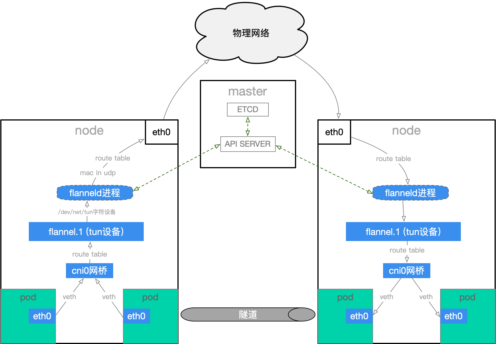
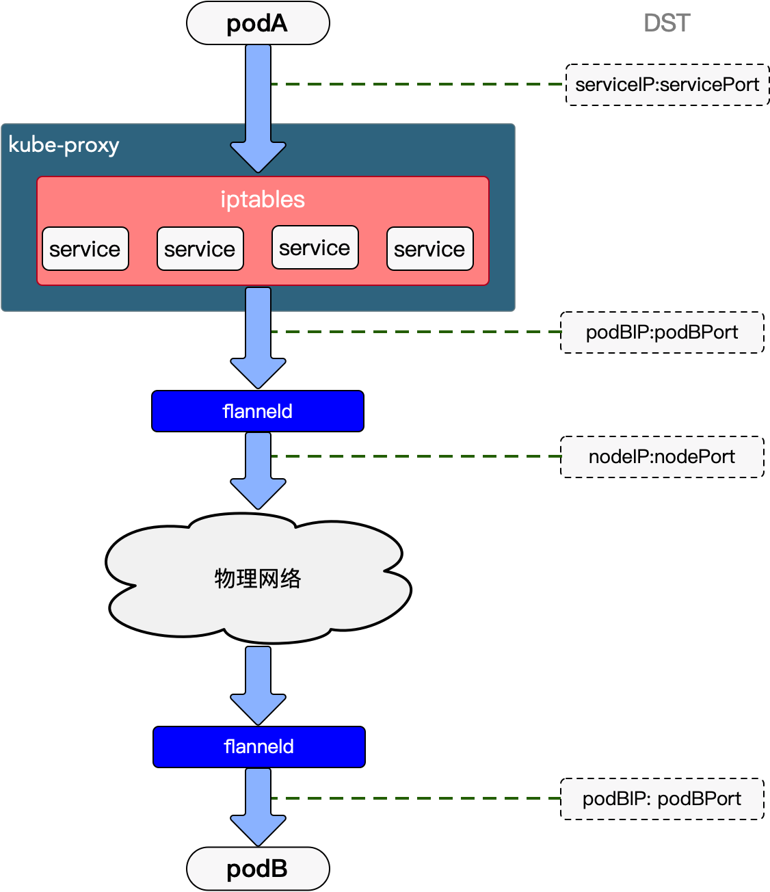

k8s网络构建
文章目录
k8s网络组件
pod作为k8s的一等公民，拥有自己的网络标识，其中CNI插件专门用于为pod创建大二层网络，每个pod都有CNI分配的其独一无二的网络标识，k8s可以合理调度pod不用担心网络的限制。
通常，pod通过service对外提供服务，这就要求所有到达service的请求都能被正确转发到对应pod上，kube-proxy就负责完成这个工作。
类比于互联网上访问网站，我们希望通过service name就可以访问service而不是要记住各式各样的ip。coreDNS就负责服务发现和域名解析。
本文将对构建k8s网络的组件进行介绍：
- CNI插件
- kube-proxy
- coredns
这三个组件各司其职，帮助我们打通pod间的通讯。
CNI与overlay网络
我们先从承载pod的overlay网络说起。
overlay网络是通过网络虚拟化技术，在同一张Underlay网络上构建出的一张或者多张虚拟的逻辑网络。在overlay网络中，设备之间可以通过逻辑链路，按照需求完成互联形成overlay拓扑
通常有两种方案实现overlay网络：
- 隧道方案：通过Vxlan或UDP封装，实现在一个三层或二层网络中透明传输pod间的二层数据。如flannel的UDP模式和Vxlan模式。
- 路由方案：通过配置路由规则，实现在一个三层网络中透明传输pod间的二层数据。如calico的方案。
本文以flannel的UDP模式为例，介绍CNI如何创建linux虚拟网络设备并正确转发pod的流量。
首先，flannel以DaemonSet在每个node上运行一个pod。flannel会在每个node创建虚拟网络设备，并为每个pod的基础容器配置网络。
node虚拟网络设备：
- cni0网桥
- flannel.1(tun设备)
- veth pair
pod网络设备：
- eth0(网络接口)
- veth pair
下图为pod to pod通讯流程。

flannel会为pod创建eth0网络接口，通过和node中的cni0网桥设置veth pair，可以把数据传输到node上。每创建一个pod都会创建一对 veth pair。其中一端是pod中的eth0，另一端是cni0。pod从网卡eth0发出的流量都会发送到cni0网桥上。
数据抵达cni0后会根据路由规则(flannel设置)转发到flannel.1上，flannel.1是tun设备，可以想象成flanneld进程埋在内核态的钩子，flanneld需要对数据包进行处理，但flanneld在用户态，linux的网络协议栈在内核态，flannel.1的作用就是把数据包从内核态切换到用户态进行处理。
如果flannel工作在UDP模式，flanned通过socket读取flanne.1数据，处理并发送给对端node的flanneld。如果在vxlan模式中flanned作用是获取必要的mac地址，ip地址信息，没有直接处理数据流。
flanneld维护了一份全局node的网络表，通过flannel.1接收到请求后，根据node表，将请求二次封装为UDP包，扔给eth0，由eth0出口进入物理网路发送给目的node。flanneld和对端flanneld通讯和普通进程间通讯过程一致。
flannel相当于为pod之间通讯建立了一条隧道，所有处理对pod都是透明的，到此一个承载pod的overlay网络搭建完成。
kube-proxy与service实现
service出现的目的是为了解决以下问题：
- 为pod提供一个稳定的对外服务地址
- 实现简单的负载均衡
kube-proxy就是实现service的k8s组件，实现步骤如下：
- service创建后kube-proxy会去apiserver注册，并保存etcd
- kube-proxy从etcd获取service信息，并把访问规则写入iptables
- 请求根据iptables规则转发到pod，默认使用iptables轮询规则实现负载均衡
可以说，services的本质就是kube-proxy在各个node添加的一系列iptables规则。
|
|
一个完整的访问流程如下：
- podA访问service，先通过podA所在node上的iptables nat转化为service对应的podB的ip和port
- flanneld进程查找podB所在node的ip并通过UDP封装
- 数据到达podB所在node的flanneld进程，还原为podA发送的数据

这里对比下CNI和kube-proxy：
- CNI创建overlay网络，为所有node和pod分配ip，对应pod ip
- kube-proxy通过添加iptables把访问service的请求转发到对应pod，对应service的cluster ip
coreDNS与服务发现
从Kubernetes 1.12开始，CoreDNS就成了Kubernetes的默认DNS服务器。其基于caddy并采用模块化设计，具体功能需要不同插件实现。
|
|
-
每个{} 代表一个zone,格式是 “Zone:port{}”, 其中".“代表默认zone,
-
{}内的每个名称代表插件的名称,只有配置的插件才会启用 当解析域名时，会先匹配zone（都未匹配会执行默认zone），然后zone内的插件从上到下依次执行(这个顺序并不是配置文件内谁在前面的顺序，而是core/dnsserver/zdirectives.go内的顺序)，匹配后返回处理（执行过的插件从下到上依次处理返回逻辑），不再执行下一个插件
-
插件的文档说明请参考: coredns.io/plugins
kubernetes会为pod和service创建DNS记录，可使用资源名称直接访问。
- service：
servicename.namespace.svc.clusterDomain - pod：
podIp.namespace.pod.clusterDomain(podIp需要用-代替.)
参考
文章作者
上次更新 2022-06-25 (8bc65f1)